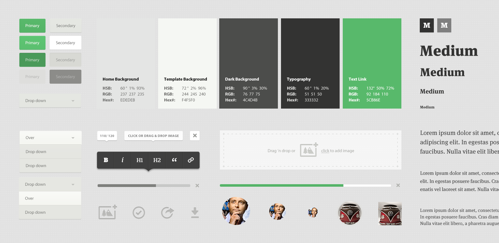
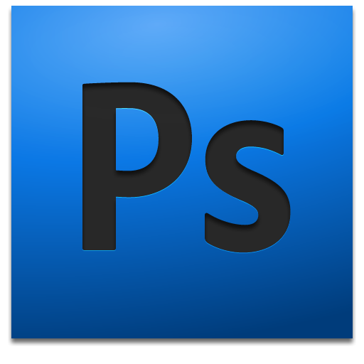

網站 UI 介紹

使用者介面(UI)
User Interface

Dribbble
Behance
UI 設計流程
- 使用者故事
- 功能圖
- UI 流程
- Wireframe
- Mockup
- Prototype
1. 使用者故事
User Story
撰寫格式
"身為一個 {{特定角色}}，我希望能有 {{特定功能}} 以便能讓我 {{得到某種價值}}"範例
- 使用者可以搜尋文章
- 管理員可以設定使用者權限
- 使用者可以編輯個人資料
2. 功能圖

3. UI 流程
UI FLOW

3. 框線圖
Wireframe
3. Mockup

4. Prototype
Prototype 可以直接進行操作。
補充資源
Q&A
切版的演進
切版(以前)
主要構成
- 大量的圖片結構。
- <table> 排版。
切版(現在)

主要構成
- 結構化。
- 重複使用。
- <div> 排版。
- 有指南(guide)可依循。
- 樣式多由 CSS 構成。
指南(guide)
歷史上的網站
Photoshop 工具介紹
工作介面
工具列(常用)
移動工具
快捷鍵: V
矩形選取畫面工具
快捷鍵: M
裁切工具
快捷鍵: C
滴管工具
快捷鍵: I
漸層工具
快捷鍵: G
文字工具
快捷鍵: T

矩形工具
快捷鍵: U
前、背景色
作業面板
圖層管理
文字管理
版型實作